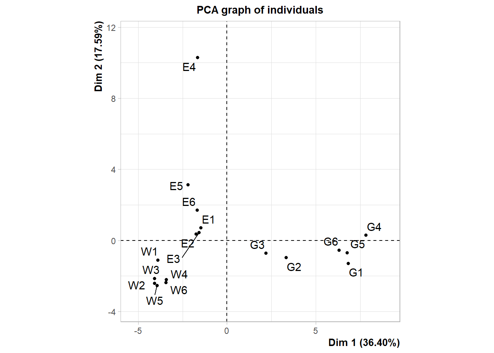
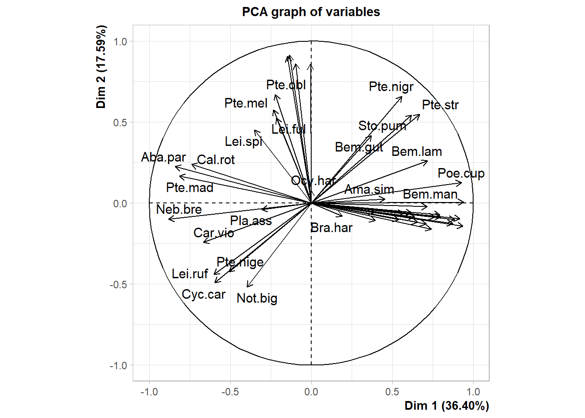
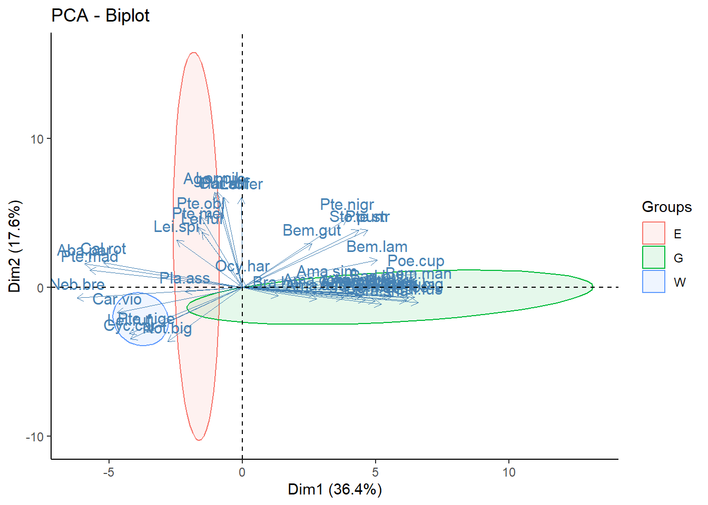
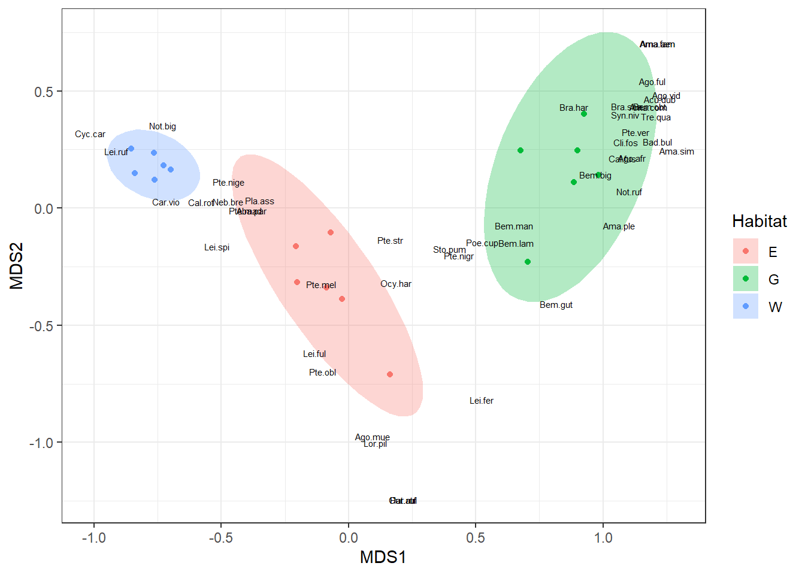

bettles <- read.table( "data/bettles.txt")Clase 8: Analisis Multivariado Parte 1
Introduccion
El análisis multivariado de similitud es una técnica de análisis multivariado que se utiliza en ecología y otras disciplinas para evaluar la similitud o diferencia entre grupos de muestras o observaciones. Esta técnica se basa en el uso de medidas de similitud o dissimilaridad, como la distancia euclidiana o la distancia de Bray-Curtis, para calcular la similitud o diferencia entre las muestras o observaciones. Dentro de los métodos de análisis multivariado encontramos el análisis de componentes principales (PCA) o el escalado no métrico multidimensional (NMDS).
Para esta clase utilizaremos la base de datos bettles.txt. Estos datos muestran las abundancias de escarabajos en tres tipos de hábitat en el Reino Unido. Hay 6 réplicas para cada hábitat (Wood, Grass, Edge).
En nuestra base de datos bettles podemos observar que la variable Habitat es un factor con tres categorias: E: Borde, G: Grama, W: Bosque.
table(bettles$Habitat)
E G W
6 6 6 Nuestro objetivo sera determinar si los tipos de habitat presentan disimilitud en base a la comunidad de escarabajos. Para estos realizaremos primero un PCA, y luego un NMDS.
library(FactoMineR)Warning: package 'FactoMineR' was built under R version 4.3.3library(factoextra)Warning: package 'factoextra' was built under R version 4.3.3Loading required package: ggplot2Welcome! Want to learn more? See two factoextra-related books at https://goo.gl/ve3WBaAntes de realizar nuestro PCA, covertiremos nuestra variable Habitat a factor.
bettles$Habitat <- factor(bettles$Habitat)Algunas veces necesitaremos estandarizar las variables
bettles_stan <- scale(bettles[,1:48])Ahora realizamos el PCA
bettles_pca <- PCA(bettles_stan, scale.unit = TRUE, ncp = 5)
Warning: ggrepel: 24 unlabeled data points (too many overlaps). Consider
increasing max.overlaps
fviz_pca_biplot(bettles_pca,
axes = c(1,2),
habillage = bettles$Habitat,
addEllipses = TRUE,
geom = FALSE,
arrow = FALSE) +
theme_classic()
library(vegan)
bettles_nmds <- metaMDS(bettles[,1:48],
distance = "bray",
k= 2, trymax = 999)Square root transformation
Wisconsin double standardization
Run 0 stress 0.042627
Run 1 stress 0.04575793
Run 2 stress 0.0453673
Run 3 stress 0.04281237
... Procrustes: rmse 0.007498226 max resid 0.02372291
Run 4 stress 0.04193601
... New best solution
... Procrustes: rmse 0.01317138 max resid 0.03732037
Run 5 stress 0.04281227
Run 6 stress 0.04281239
Run 7 stress 0.04575821
Run 8 stress 0.04544005
Run 9 stress 0.0462439
Run 10 stress 0.04565175
Run 11 stress 0.04547934
Run 12 stress 0.04544023
Run 13 stress 0.04546674
Run 14 stress 0.04575796
Run 15 stress 0.04262686
Run 16 stress 0.04207822
... Procrustes: rmse 0.008331758 max resid 0.02647499
Run 17 stress 0.04522205
Run 18 stress 0.04193599
... New best solution
... Procrustes: rmse 1.279848e-05 max resid 2.116802e-05
... Similar to previous best
Run 19 stress 0.04536719
Run 20 stress 0.04281225
*** Best solution repeated 1 timesUna vez listo el nmds, revisaremos el stress
bettles_nmds$stress[1] 0.04193599Para graficar nuestro nmds con ggplot2 es necesario preparar nuestra base de datos.
NMDS_habitat <- data.frame(Habitat = bettles$Habitat,
bettles_nmds$points)
NMDS_habitat Habitat MDS1 MDS2
E1 E -0.08609199 -0.3392866
E2 E -0.20617689 -0.1620083
E3 E -0.20200545 -0.3174341
E4 E 0.16289900 -0.7102254
E5 E -0.02580060 -0.3877951
E6 E -0.07004738 -0.1043199
G1 G 0.92594733 0.4009712
G2 G 0.67550362 0.2469993
G3 G 0.70342217 -0.2299563
G4 G 0.98302496 0.1405089
G5 G 0.89899443 0.2461925
G6 G 0.88660548 0.1099731
W1 W -0.76176230 0.1219001
W2 W -0.76406549 0.2364569
W3 W -0.84039393 0.1485550
W4 W -0.69922079 0.1642153
W5 W -0.72709645 0.1824889
W6 W -0.85373571 0.2527647Ahora podemos preparar la tabla para especies de escarabajos
NMDS_especies <- data.frame(Especies = colnames(bettles[,1:48]),
bettles_nmds$species)
NMDS_especies Especies MDS1 MDS2
Aba.par Aba.par -0.38103144 -0.009286594
Acu.dub Acu.dub 1.22576889 0.465471651
Ago.afr Ago.afr 1.11433752 0.215337941
Ago.ful Ago.ful 1.19365656 0.542352026
Ago.mue Ago.mue 0.09413857 -0.972066709
Ago.vid Ago.vid 1.25055215 0.483516950
Ama.aen Ama.aen 1.21457744 0.702910703
Ama.com Ama.com 1.17922297 0.431580424
Ama.fam Ama.fam 1.21457744 0.702910703
Ama.ple Ama.ple 1.06360464 -0.072803324
Ama.sim Ama.sim 1.28944693 0.246314959
Bad.bul Bad.bul 1.21605163 0.284539713
Bem.big Bem.big 0.97123927 0.144566133
Bem.gut Bem.gut 0.81674667 -0.408995811
Bem.lam Bem.lam 0.66081571 -0.147867819
Bem.man Bem.man 0.65074922 -0.074511206
Bem.obt Bem.obt 1.18483339 0.434539482
Bra.har Bra.har 0.88606709 0.432994776
Bra.sha Bra.sha 1.09273207 0.434063292
Cal.fus Cal.fus 1.07718647 0.212935508
Cal.rot Cal.rot -0.57823614 0.026057200
Car.vio Car.vio -0.71833662 0.029927567
Cli.fos Cli.fos 1.09069048 0.281178178
Cur.aul Cur.aul 0.21367679 -1.245039757
Cyc.car Cyc.car -1.01288065 0.319978609
Har.ruf Har.ruf 0.21367679 -1.245039757
Lei.fer Lei.fer 0.52292459 -0.816325344
Lei.ful Lei.ful -0.13309323 -0.618665982
Lei.ruf Lei.ruf -0.91375261 0.244173759
Lei.spi Lei.spi -0.51789317 -0.164071790
Lor.pil Lor.pil 0.10658343 -1.000485319
Neb.bre Neb.bre -0.47373990 0.028158995
Not.big Not.big -0.73002082 0.353313263
Not.ruf Not.ruf 1.10495788 0.072625068
Ocy.har Ocy.har 0.18749831 -0.318354252
Pat.atr Pat.atr 0.21367679 -1.245039757
Pla.ass Pla.ass -0.34719161 0.034667491
Poe.cup Poe.cup 0.52528007 -0.144042367
Pte.mad Pte.mad -0.40517199 -0.008909250
Pte.mel Pte.mel -0.10689089 -0.323686126
Pte.nige Pte.nige -0.46919230 0.113494896
Pte.nigr Pte.nigr 0.43388494 -0.201756407
Pte.obl Pte.obl -0.10113381 -0.696020231
Pte.str Pte.str 0.16432838 -0.135301205
Pte.ver Pte.ver 1.12853436 0.324407093
Sto.pum Sto.pum 0.39822570 -0.173062430
Syn.niv Syn.niv 1.08755790 0.399652569
Tre.qua Tre.qua 1.20873999 0.391525845Ahora graficaremos
ggplot()+
geom_point(data= NMDS_habitat, aes(x= MDS1, y= MDS2, color = Habitat))+
stat_ellipse(data= NMDS_habitat, aes(x= MDS1, y= MDS2, fill = Habitat),
alpha = 0.3, geom = "polygon")+
geom_text(data= NMDS_especies, aes(x= MDS1, y= MDS2, label = Especies),
size= 2)+
theme_bw()
ggsave("nmds.png", plot = last_plot(), units = "cm", width = 15, height = 15, dpi = 450)PERMANOVA es un método de análisis de la varianza multivariante que se utiliza para evaluar la similitud o diferencias entre grupos de muestras en una o más variables categóricas o continúas. Se basa en el análisis de la varianza univariante (ANOVA), pero es más adecuado para datos multivariantes en los que hay más de una variable dependiente.
El método de PERMANOVA permite comparar grupos de muestras en términos de la similitud o diferencias de sus patrones de variación en un conjunto de variables. Se puede utilizar para evaluar si hay diferencias significativas entre grupos de muestras en un conjunto de variables y si hay una asociación entre estas variables y la variable categórica independiente.
El método de PERMANOVA se puede aplicar a cualquier tipo de datos multivariantes, incluyendo datos de composición química, datos de secuenciación de ADN, datos de imágenes y datos de mediciones físicas o químicas. Se puede utilizar para evaluar la similitud o diferencias entre grupos de muestras en una amplia variedad de contextos, como la ecología, la biología molecular y la ingeniería.
En R, el método de PERMANOVA se puede realizar mediante el uso de la función adonis del paquete vegan.
Ejemplo
bettles_per <- adonis2(bettles[ , 1:48] ~ Habitat, data = bettles)
bettles_perPermutation test for adonis under reduced model
Terms added sequentially (first to last)
Permutation: free
Number of permutations: 999
adonis2(formula = bettles[, 1:48] ~ Habitat, data = bettles)
Df SumOfSqs R2 F Pr(>F)
Habitat 2 1.30897 0.8585 45.503 0.001 ***
Residual 15 0.21575 0.1415
Total 17 1.52472 1.0000
---
Signif. codes: 0 '***' 0.001 '**' 0.01 '*' 0.05 '.' 0.1 ' ' 1El estadístico F mide la relación entre la varianza explicada por el modelo y la varianza no explicada por el modelo. Se calcula como la relación entre la varianza media de los grupos y la varianza media de los residuales.
Un valor alto de F indica que hay una gran diferencia entre la varianza explicada por el modelo y la varianza no explicada, lo que sugiere que el modelo es un buen ajuste para los datos. Por el contrario, un valor bajo de F indica que hay poca diferencia entre la varianza explicada y la no explicada, lo que sugiere que el modelo no es un buen ajuste para los datos.
El coeficiente de determinación (R²) es una medida de qué tan bien un modelo se ajusta a los datos. En el contexto de un análisis de varianza multivariado permutado (PERMANOVA), R² se utiliza para evaluar qué tan bien el modelo de PERMANOVA se ajusta a los datos.
El valor de R² se calcula como la relación entre la varianza total explicada por el modelo y la varianza total de los datos. Un valor de R² cercano a 1 indica un ajuste muy bueno del modelo a los datos, mientras que un valor de R² cercano a 0 indica un ajuste pobre.
El R² para los residuales mide qué tan bien el modelo se ajusta a los datos excluyendo la varianza explicada por el efecto de los factores. Es decir, mide la proporción de varianza total que no es explicada por el modelo. Un valor alto de R² para los residuales indica un ajuste pobre del modelo a los datos, mientras que un valor bajo indica un ajuste bueno.
El R² para el total mide qué tan bien el modelo se ajusta a los datos incluyendo la varianza explicada por el efecto de los factores. Es decir, mide la proporción de varianza total explicada por el modelo. Un valor alto de R² para el total indica un ajuste muy bueno del modelo a los datos, mientras que un valor bajo indica un ajuste pobre.
Prueba de contraste
library(RVAideMemoire)Warning: package 'RVAideMemoire' was built under R version 4.3.3*** Package RVAideMemoire v 0.9-83-7 ***bettles_per_con <- pairwise.perm.manova(dist(bettles[,1:48]), bettles$Habitat,
nperm = 999)
bettles_per_con
Pairwise comparisons using permutation MANOVAs on a distance matrix
data: dist(bettles[, 1:48]) by bettles$Habitat
999 permutations
E G
G 0.003 -
W 0.122 0.006
P value adjustment method: fdr